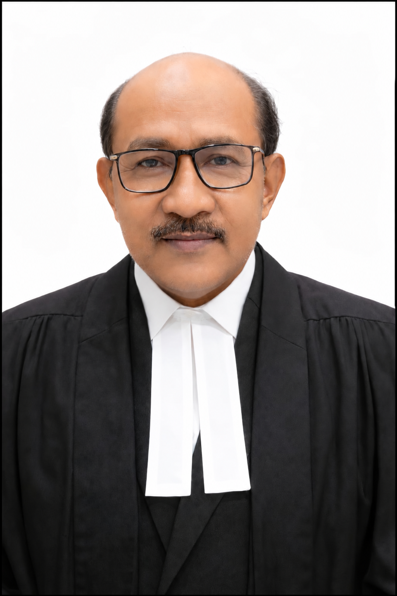

Calcutta & beyond
Legal practice at the Calcutta High Court, with work extending to other High Courts.
Based in Garden Reach, Kolkata, Md. Kalam brings 27 years of legal practice to his work as an advocate, alongside a commitment to social service and education.

Practising as an advocate since 1999, Md. Kalam represents matters at the Calcutta High Court and other High Courts, district courts, consumer forums and tribunals across India.
Legal practice at the Calcutta High Court, with work extending to other High Courts.
His professional biography identifies him as an Advocate-on-Record at the Supreme Court of India.
Representation in district courts, consumer forums and tribunals.
Jogesh Chandra Chaudhuri Law College · University of Calcutta
Maulana Azad College, Kolkata
Farakka
Rooted in the community.
Alongside his legal career, Md. Kalam is involved in public service and education. These interests form an important part of his public life in Kolkata.
Public Service
Community engagement, seminars, public speaking and social awareness.
Explore Public Service →Legal Education
Mentoring law students and LL.B. graduates while promoting legal awareness in society.
Explore Educator →